Sistemas de Fuse
Utilize as Fuses para definir a estratégia da sua dupla. Cada escolha abre novas possibilidades de combo e defesa.

Alta ExecuçãoFreestyle
Permite trocas diretas (Handshake Tags) múltiplas vezes no mesmo combo.

Dano MassivoDouble Down
Permite cancelar uma Ultimate na outra para combos fatais.
Acessibilidade
Explorar Guia Tático
Pulse
Facilita a execução de combos e foca nos fundamentos do jogo neutro.

ComebackFury
Aumenta o dano causado quando sua vida está abaixo de um certo limite.
Sinergia
Explorar Guia Tático
2x Assist
Permite utilizar ataques de assistência duas vezes seguidas em sequência.
Defesa
Explorar Guia Tático
Juggernaut
Focada em resistência e trocas de dano favoráveis com armadura.

Tag-InSidekick
Potencializa os ataques de entrada do personagem reserva após uma troca.